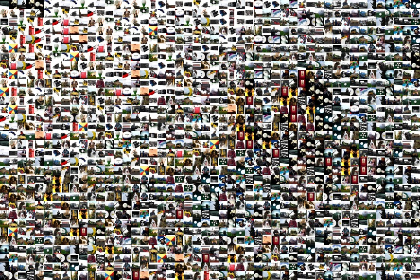
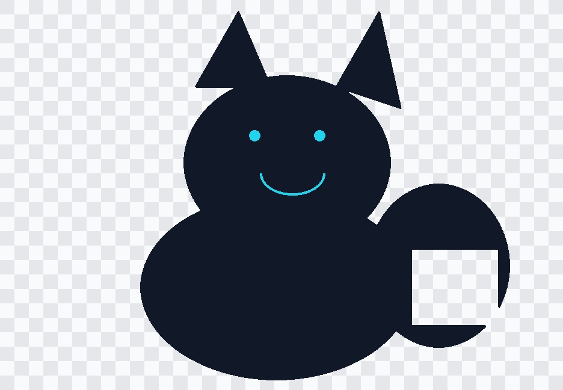
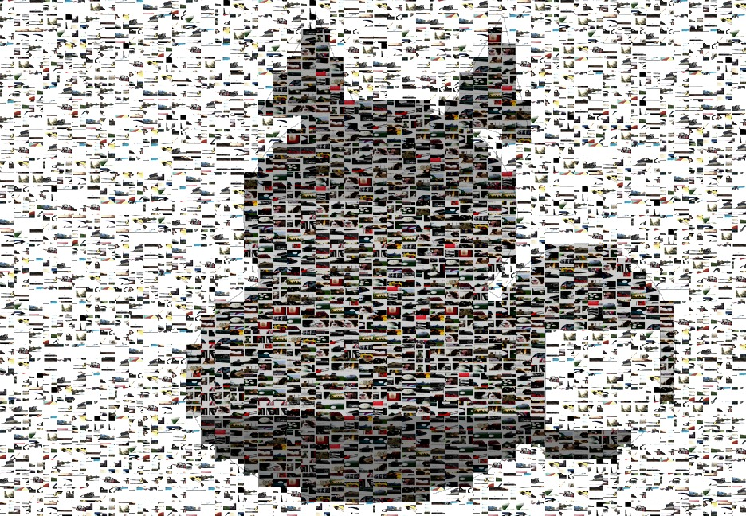
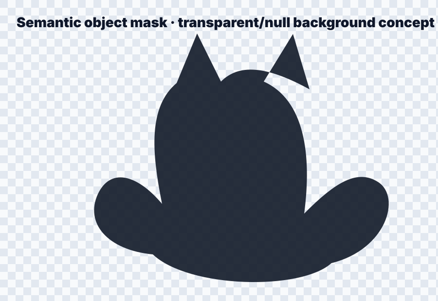
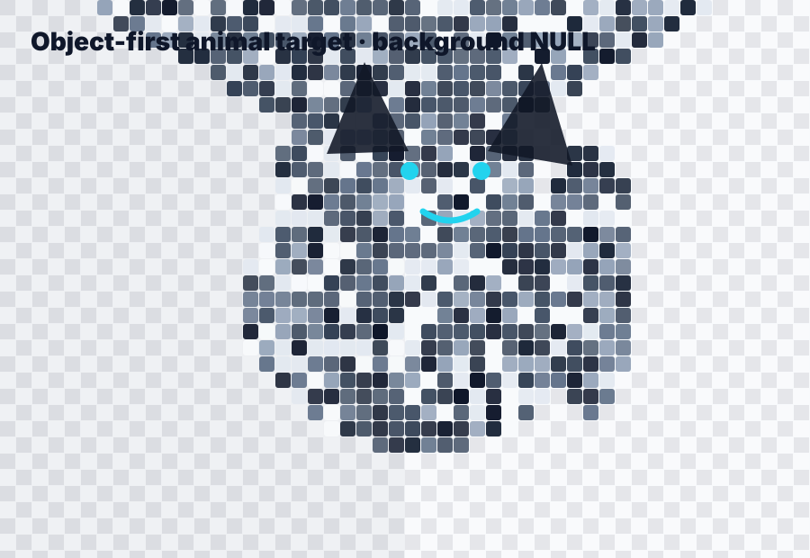

ImageNet label로 고른 이미지가
모자이크의 합이 됩니다
최신 코멘트에 맞춰 Drive 사진을 쓰지 않고, ImageNet-derived public subset인 Imagenette 2 160px validation split으로 실제 JPEG 결과를 생성했습니다.
Target label은 n03028079 / church, tile pool은 나머지 9개 label에서 각 12장씩 균형 있게 선정했습니다.

Dataset
Imagenette 2 160px
fast.ai가 배포하는 ImageNet 10-class subset. 원본 ImageNet 접근 대신 공개적으로 재현 가능한 ImageNet-derived 대안입니다.
Target
n03028079 · church
건축물 실루엣과 하늘/명암 대비가 있어 “멀리서 대표 이미지, 가까이서 tile” 효과를 검증하기 좋습니다.
Tile pool
9 labels × 12 images = 108 tiles
target label은 제외하고, 나머지 label을 같은 수로 뽑아 label 기준 selection을 명확히 했습니다.
Target image
대표 이미지도 public dataset 이미지이므로 docs assets에 포함했습니다.
Tile contact sheet

각 tile은 EXIF transpose → center crop → resize만 적용했습니다. 색상 tint/hue/opacity overlay는 적용하지 않았습니다.
Round 5: image-tile semantic target

정정 반영: object 영역과 NULL/background 영역 모두 단순 색상 block이 아니라 이미지 tile로 채우도록 바꿨습니다. Target은 COCO 방식의 segmentation/object-first 구조를 기준으로 분리합니다.
All cells filled by images

NULL 영역도 비워두거나 흰색 사각형으로 칠하지 않고, 흰색 영역이 많은 이미지 tile 후보군으로 채웠습니다. Object 영역은 후처리된 target mask/histogram 기준으로 어두운/고대비 이미지 tile을 재선별합니다.
Round 4: object-first target

최신 코멘트대로 배경은 NULL/transparent 개념으로 분리하고 object 영역만 semantic target으로 남기는 방향을 추가했습니다. 배경 cell은 흰색/검정/저채도 cell로만 채워 target object를 먼저 보이게 합니다.
Animal target mosaic alternative

church처럼 배경 비중이 큰 target 대신 동물/object 중심 target을 쓰는 대안입니다. 후처리된 target 색상 histogram 기준으로 tile 후보를 재선별하는 정책을 report에 명시했습니다.
Selected labels
- n01440764 · tench
- n02102040 · English springer
- n02979186 · cassette player
- n03000684 · chain saw
- n03394916 · French horn
- n03417042 · garbage truck
- n03425413 · gas pump
- n03445777 · golf ball
- n03888257 · parachute
Generated report
✓ 864×576 mosaic
✓ 48×32 grid, 18px cells
✓ JSON includes target_label and tile_label_counts
Round 4 decision
기존 결과는 target/background가 함께 매칭되어 object 유사도가 낮았습니다. 따라서 semantic mask로 object만 분리하고, 배경은 white/black/null cell로 처리하며, animal/person처럼 중앙 object가 큰 target으로 재선정하는 방식을 채택했습니다.
Known limitation
Imagenette 160px는 작고 10-class라 색 coverage가 제한됩니다. 이번 run의 hard_match_cell_ratio는 높습니다. 이는 작은 public subset의 한계이며, 실제 상품에서는 더 많은 label/색상 coverage가 필요합니다.